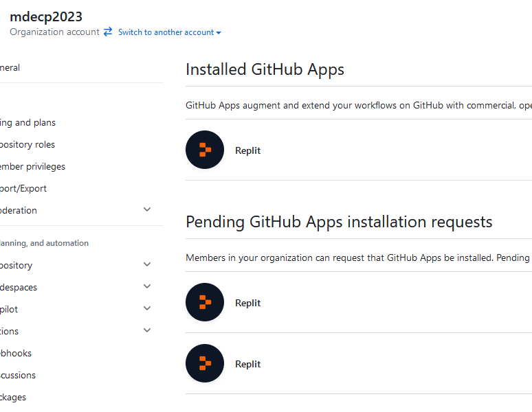

上課內容 <<
Previous Next >> setup
w2-w3
w2
說明安裝 Apps, 如何設定網路, 查驗是否正確連網
說明如何利用近端可攜系統執行 C 程式, 如何利用 ChatGPT 進行對話
說明如何利用 Replit 協助編輯網頁內容
說明如何 connect Replit to Github, 如何建立個人網站並利用 Replit 啟動編輯網站
w3
有關電腦輔助設計室網路設定說明
處理 .replit 與 replit.nix 中的舊 Python 設定問題
說明如何為 site-個人github帳號 倉儲設定 Github Pages
採用 Github Classroom 建立作業倉儲的問題:
2023/09/26 在 1a w3 課程進行到建立各學員 site 作業時發現, 將 Replit 導入 Github 倉儲的流程中, 所產生的系統間權限設定, 必須由 Github Classroom 管理帳號 (以 cp2023 為例, 附屬在 mdecp2023 帳號下), 針對各用戶所提出的個別 Replit 權限 requests (以 site-scrum-1 倉儲為例, 只能透過 Replit 提出控管 mdecp2023/site-scrum-1 倉儲的權限) 逐一進行設定.

(上圖顯示共有三名用戶針對 mdecp2023 帳號下的 Github Classroom 倉儲提出 Replit 連線要求, 其中只有最上方用戶的 request 取得 mdecp2023/site-scrum-1 倉儲的維護權限, 其餘兩則 requests 則仍處於待審核階段. 意即若要讓各用戶整合 Replit, 每一個 Github Classroom 作業, 管理者都必須手動處理超過兩百則的 requests)
為去除管理者的手動設定負擔, 決定 2023 cp 與 cad 等課程將放棄使用 Github Classroom. 改為由各學員自行針對課程建立用來評分的課程倉儲與網站 (cp 課程建立 cp2023 倉儲, cad 課程則建立 cad2023 倉儲), 直接附屬在學員的 Github 帳號下, 後續的 submodule 設定與倉儲協同權限則統一由各學員自行負責.
jsliu_c_programming.pdf (需要下載密碼)
Introduction to C (經由校園網路或 VPN 下載)
指定 Github Classroom 作業: 取得 https://github.com/mdecp2023 帳號下的 "site-個人github帳號" 倉儲 (用於學員簡報以及期中期末評分用)
改由學員自行利用 https://github.com/mdecycu/cmsite 倉儲作為 template, 建立名稱為 cp2023 的評分倉儲.
SciTE 與 Tiny C Compiler 若要設定為 Tools - Compile 之後產生可執行檔案 a.out, cpp.properties 設定檔案必須修改如下:
ccopts=-pedantic -Os
#cc=g++ $(ccopts) -c $(FileNameExt) -o $(FileName).o
#ccc=gcc $(ccopts) -c $(FileNameExt) -o $(FileName).o
cc=tcc.exe -run
ccc=tcc.exe -o a.out
make.command=make
#command.compile.*.c=$(ccc) -std=c99
command.compile.*.c=$(ccc) $(FileNameExt)
command.build.*.c=$(make.command)
command.build.*.h=$(make.command)
command.clean.*.c=$(make.command) clean
command.clean.*.h=$(make.command) clean
# use tcc to run .c program
#command.go.*.c=./$(FileName)
command.go.*.c=$(cc) $(FileNameExt)
Exercises:
請從 jsliu_c_programming.pdf (需要下載密碼)與 Introduction to C (經由校園網路或 VPN 下載)電子書中擷取 C 程式範例, 分別:
- 在可攜程式環境中以 SciTE + Tiny C Compiler 編譯系統, 使用 Tools - Go 類編譯方式執行.
- 在可攜程式環境中以 SciTE + Tiny C Compiler 編譯系統, 使用 Tools - Compile 編譯連結後取得 a.out, 然後在命令列中以 a.out 執行.
- 在 Replit 全球資訊網 IDE 環境中的 Shell 頁面, 以 cc ex1.c 產生可執行檔案 a.out, 並以 ./a.out 執行, 或者以 cc ex1.c -o ex1 指定編譯連結後的可執行檔案名稱為 ex1 後, 以 ./ex1 執行.
最後將所選擇的 C 程式範例執行過程與相關說明內容, 整理在 mdecp2023.github.io/site-個人github帳號 網頁中的 c_ex 頁面中.
參考:
使用者輸入兩個整數後相加的 C 程式範例:
/* Read in two integers , add them and display the answer */
#define _CRT_SECURE_NO_WARNINGS
#include<stdio.h>
int main()
{
int this_is_a_number1, this_is_a_number2, total;
printf("Please enter an integer number:\n ");
/* read number in */
if (scanf("%d", &this_is_a_number1) == 1) {
printf("%d", this_is_a_number1);
} else {
printf("Failed to read integer.\n");
}
printf("You entered %d\n", this_is_a_number1);
printf("Please enter another number: \n");
if (scanf("%d", &this_is_a_number2) == 1) {
printf("%d", this_is_a_number1);
} else {
printf("Failed to read integer.\n");
}
printf("You entered %d\n", this_is_a_number2);
total = this_is_a_number1 + this_is_a_number2;/* add two numbers */
printf("total is %d\n", total);
return 0;
}
上課內容 <<
Previous Next >> setup